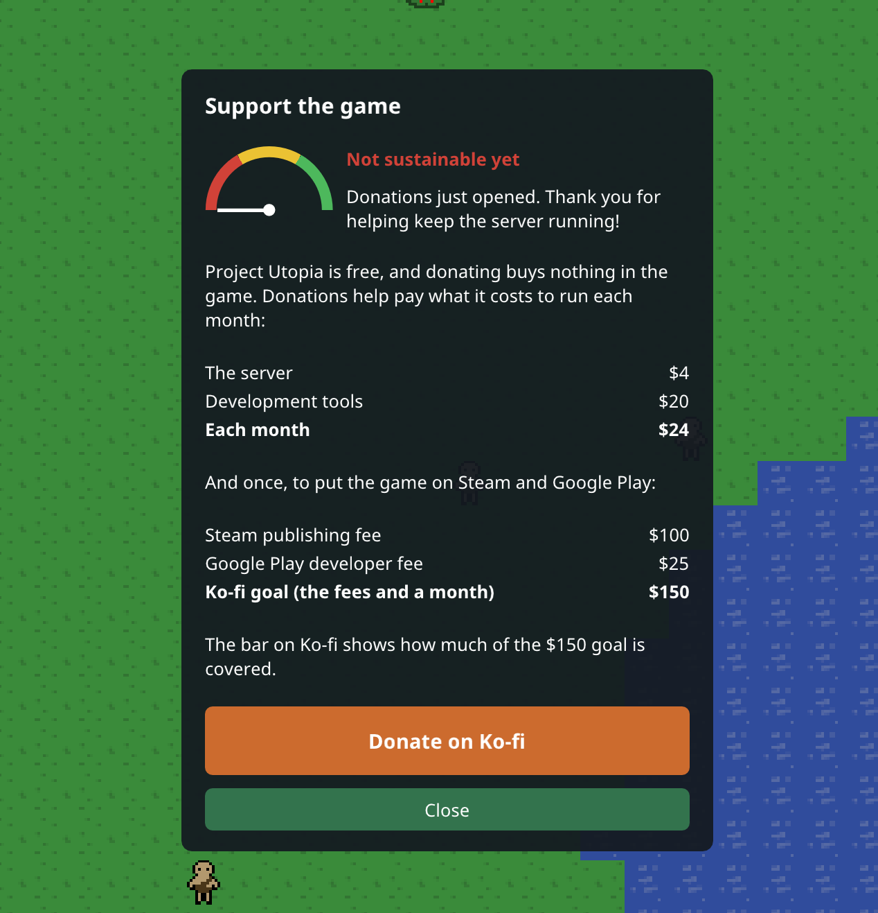
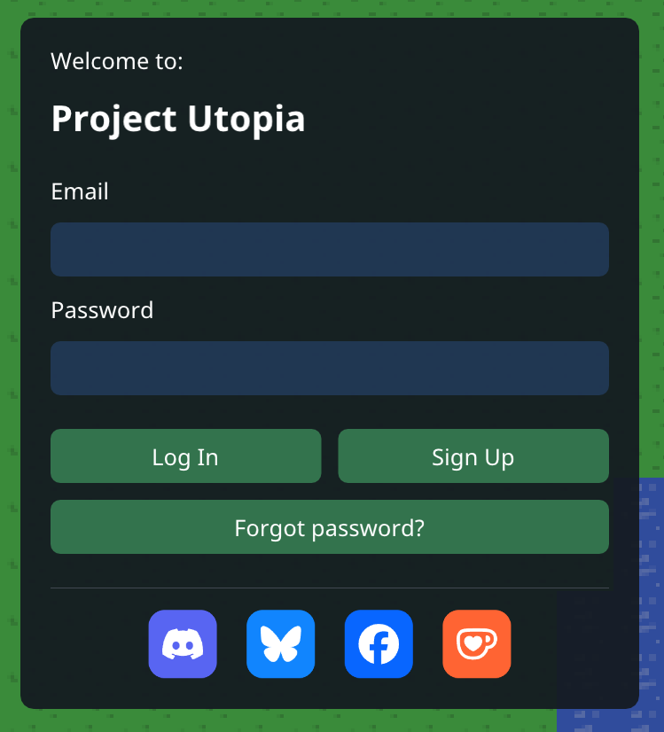

0.4 · 2026-10-26
One game on phone and PC
Development Version 4
The phone and the PC now share every screen, so both get each new feature the day it ships. The PC game also installs and updates itself through itch.io.
On your phone
- All UI elements will now be the same through both clients.
- Tapping a text field opens the right keyboard (email, password or text), and the window moves up above it.
- Drag a finger to scroll a long window, like the patch notes.
- Starvation alerts now have a switch in the menu.
- Back closes the window on top, then opens and closes the menu.
On PC
- All UI elements will now be the same through both clients.
- Install the game with the itch app from the game's itch.io page (testers only for now, ask Jared for access in discord). The itch app updates it by itself from here on.
- If the game is out of date, Update the app opens the itch.io page.
Support the game
- Menu > Support the game shows what the game costs to run each month, the one-time store fees for Steam and Google Play, and the Ko-fi goal.
- The funding dial shows how the game is doing: red means not sustainable yet, yellow means sustained, green means growing.
- The patch notes and the sign-in screen have buttons for Discord, Bluesky, Facebook and Ko-fi.
Good to know
- Everyone needs the new version: the phone app updates to 0.4, and PC players install it from itch.io.
THANK YOU FOR PLAYING
Please send an email if you have any questions about the game, or you want access to it while it's in development! jared.allen.games@gmail.com

